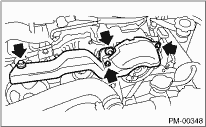
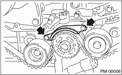
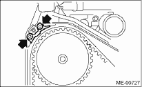

1. Remove the radiator fan and air conditioner fan. 
2. Protect the radiator with cardboard and blanket.
3. Remove the V-belt covers.

4. Remove the V-belts.
5. Remove the A/C compressor V-belt tensioner.
6. Using the ST, lock the crankshaft and remove pulley bolt.
| ST 499977100 | CRANK PULLEY WRENCH |
7. Remove the crank pulley.
8. Remove the belt cover LH.
9. Remove the front timing belt cover.
10. Remove the timing belt guide. (MT model)

11. Turn the crankshaft and align the alignment marks on crankshaft, and left and right cam sprockets with notches of belt cover and cylinder block.
| ST 499987500 | CRANKSHAFT SOCKET |
|
(A) |
Notch |
|
(B) |
Alignment mark |
12. Remove the belt idler.
13. Remove the belt idler (No. 2).

14. Remove the timing belt.
15. Remove the automatic belt tension adjuster assembly.
16. Install in the reverse order of removal.
1. Remove the radiator fan and air conditioner fan.
2. Protect the radiator with cardboard and blanket.
3. Remove the V-belts.
4. Remove the A/C compressor V-belt tensioner.
5. Using the ST, lock the crankshaft and remove pulley bolt.
| ST 499977100 | CRANK PULLEY WRENCH (2.5 L MODEL) |
| ST 499977400 | CRANK PULLEY WRENCH (2.0 L MODEL) |
6. Remove the crank pulley.
7. Remove the belt cover (LH).
8. Remove the belt cover (RH).
9. Remove the front belt cover.
10. Remove the timing belt guide. (MT model)



11. Turn the crankshaft and align the alignment marks on crankshaft, and left and right cam sprockets with notches of belt cover and cylinder block. Use the ST to turn crankshaft.
| ST 499987500 | CRANKSHAFT SOCKET |

12. Remove the belt idler.
13. Remove the timing belt.
14. Remove the automatic belt tension adjuster assembly.
15. Install in the reverse order of removal.
CAUTION:
When installing the timing belt, be sure to align all alignment marks on the belt with corresponding marks on the sprockets. If incorrectly installed, interference between pistons and valves may occur.